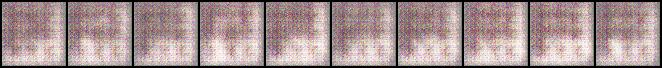

6.1 題目
投影片第 19 頁的報告第 1 題：「Describe the difference between WGAN and GAN, list at least two differences」，並標註 WGAN 指的是 WGAN 論文（Arjovsky、Chintala、Bottou，2017）、GAN 指的是原始 GAN 論文（Goodfellow 等，2014）。第 24 頁給了實作提示：
- 拿掉判別器最後的 Sigmoid。
- 算 loss 時不取對數。
- 把判別器的權重限制在一個常數範圍內（投影片寫「1 ~ -1」）。
- 用 RMSProp 或 SGD 當優化器。
本章先講為什麼要這樣改，再實測。題目要的答案放在 6.6 節。
6.2 GAN 在最小化什麼，以及它的問題
原始 GAN 論文證明了一件事：如果判別器每一步都訓練到最好，那麼生成器的目標，等於在最小化真實分布與生成分布之間的 Jensen–Shannon 散度（JS divergence）。JS 散度是一種「兩個分布有多不同」的量，兩個分布完全相同時是 0，完全不重疊時是最大值 log 2。
問題就出在「完全不重疊」。64×64×3 = 12,288 維的空間裡，真正像動漫臉的圖只占極小的一塊（一個低維的曲面）；剛初始化的生成器畫出的灰色雜訊（第 2 章）又落在另一小塊。兩塊幾乎不可能重疊。這時：
- JS 散度是常數 log 2——不管生成器的分布離真的近一點還是遠一點，數值都一樣，對生成器的參數微分是 0，沒有方向可走。
- 實務上，判別器很容易把兩塊完全分開，Sigmoid 的輸出貼到 0 或 1，梯度跟著消失。第 3 章看到的「判別器幾乎一直贏」、第 5 章的崩潰，都和這件事有關。
WGAN 論文用一個一維的例子說明：真實分布是「只在 0 這一點」、生成分布是「只在 θ 這一點」。只要 θ ≠ 0，兩者就不重疊，JS 散度永遠是 log 2；但直覺上，θ 從 5 移到 1 明明是更接近了。WGAN 改用 Wasserstein-1 距離（又叫 Earth Mover's Distance，推土機距離）：把一堆土（生成分布）搬成另一堆土（真實分布）的形狀，最少要搬多少「土量 × 距離」。在這個例子裡它就是 |θ|——θ 越接近 0 越小，處處都有梯度。
直接算推土的距離很難，但它有一個等價的寫法（Kantorovich–Rubinstein 對偶）：在所有「1-Lipschitz」的函數 f 裡，找一個讓「真圖的平均分數 − 假圖的平均分數」最大的；那個最大值就是 Wasserstein 距離。1-Lipschitz 的意思是 |f(x) − f(y)| ≤ ‖x − y‖：輸入改變多少，輸出最多改變多少，函數不能有太陡的地方。這個 f 就由判別器來扮演——但它不再是「判斷真假的機率」，而是一個打分數的函數，WGAN 論文改叫它 critic（評論家）。
6.3 WGAN 的五個改動，範例程式都留了註解
從上面的公式直接推出 WGAN 的寫法。範例程式在對應的地方都留好了註解，這一節逐一對照。
改動 1：判別器不要 Sigmoid（critic 輸出任意實數）
# input: (batch, 3, 64, 64)
"""
NOTE FOR SETTING DISCRIMINATOR:
Remove last sigmoid layer for WGAN
"""critic 的分數是用來相減、估距離的，沒有「機率」的意義，也不能被壓在 0–1 之間——Sigmoid 會讓分數飽和，正是原始 GAN 梯度消失的來源之一。
改動 2：loss 不取 log
"""
NOTE FOR SETTING DISCRIMINATOR LOSS:
GAN:
loss_D = (r_loss + f_loss)/2
WGAN:
loss_D = -torch.mean(r_logit) + torch.mean(f_logit)
WGAN-GP:
gradient_penalty = self.gp(r_imgs, f_imgs)
loss_D = -torch.mean(r_logit) + torch.mean(f_logit) + gradient_penalty
""" """
NOTE FOR SETTING LOSS FOR GENERATOR:
GAN: loss_G = self.loss(f_logit, r_label)
WGAN: loss_G = -torch.mean(self.D(f_imgs))
WGAN-GP: loss_G = -torch.mean(self.D(f_imgs))
"""critic 要讓「真圖平均 − 假圖平均」越大越好，寫成要最小化的 loss 就是 loss_D = -mean(D(真)) + mean(D(假))，−loss_D 就是 critic 對 Wasserstein 距離的估計。生成器要讓這個距離變小，它只能影響假圖那一項，所以 loss_G = -mean(D(假))：讓 critic 給假圖的分數越高越好。沒有標籤、沒有 BCE、沒有 log。
改動 3：權重 clipping，讓 critic 保持 Lipschitz
"""
NOTE FOR SETTING WEIGHT CLIP:
WGAN: below code
"""
# for p in self.D.parameters():
# p.data.clamp_(-self.config["clip_value"], self.config["clip_value"])公式要求 critic 是 1-Lipschitz（或至少是某個 K-Lipschitz，只差一個倍數）。WGAN 論文用最粗暴的方法：每次更新判別器之後，把每一個參數都截到 [−c, c] 之間。權重有上限，網路能做出的最陡斜率也就有上限。論文用 c = 0.01；投影片第 24 頁寫「1 ~ -1」，對這個判別器幾乎等於沒有限制（第 2 章：卷積權重初始化在 ±0.02 附近），本書照論文用 0.01。論文自己也說：weight clipping 是「a clearly terrible way to enforce a Lipschitz constraint」——c 太大，critic 要很久才訓練得好；c 太小，梯度容易消失。第 7 章的 WGAN-GP 就是為了換掉它。
改動 4：RMSProp，不用動量
"""
NOTE FOR SETTING OPTIMIZER:
GAN: use Adam optimizer
WGAN: use RMSprop optimizer
WGAN-GP: use Adam optimizer
"""
self.opt_D = torch.optim.Adam(self.D.parameters(), lr=self.config["lr"], betas=(0.5, 0.999))
self.opt_G = torch.optim.Adam(self.G.parameters(), lr=self.config["lr"], betas=(0.5, 0.999))WGAN 論文發現用 Adam 這類有動量的優化器時，critic 的訓練有時會不穩定，改用沒有動量的 RMSProp，學習率 5×10−5。
改動 5：critic 多訓練幾次（n_critic = 5）
這一個不需要改程式：config.py 的 "n_critic" 與 trainer_gan.py:148 的 if self.steps % self.config["n_critic"] == 0 已經寫好了（第 3 章）。Wasserstein 距離的估計要在 critic 「訓練得夠好」時才準，所以論文讓 critic 每更新 5 次，生成器才更新 1 次。對 HW06 來說，同樣 100 個 epoch（111,500 步），生成器只更新 22,300 次。
6.4 照註解字面改：三種下場
repo 裡的 筆記.txt 第二條寫著：「WGAN, WGAN-GP 只替換 loss_G 是不能使用的，需進一步研究」。本書把 HW06 複製一份到暫存資料夾，照三種常見的「改一部分」各跑一次。
下場 1：拿掉 clipping 的註解 → KeyError
把 trainer_gan.py:142–143 前面的 # 刪掉、其他不改，跑 train.py，第一步就停下來：
p.data.clamp_(-self.config["clip_value"], self.config["clip_value"])
~~~~~~~~~~~^^^^^^^^^^^^^^
KeyError: 'clip_value'config.py 裡沒有 clip_value 這個鍵（第 0 章），要自己加上 "clip_value": 0.01。
下場 2：只換 loss_G → 第 1 個 epoch 是雜訊，但會恢復
這是筆記的字面做法：只把 trainer_gan.py:164 換成 loss_G = -torch.mean(self.D(f_imgs))，判別器仍是 Sigmoid + BCE。為了省時間，n_epoch 改成 20。每個 epoch 結束時的進度條（逐字）：
Epoch 1: 100%|██████████| 1115/1115 [00:24<00:00, 45.03it/s, loss_D=6.96e-7, loss_G=-3.85e-7] «1»
Epoch 2: 100%|██████████| 1115/1115 [00:17<00:00, 62.17it/s, loss_D=0.133, loss_G=-7.75e-5]
Epoch 3: 100%|██████████| 1115/1115 [00:17<00:00, 63.99it/s, loss_D=0.266, loss_G=-0.00744]
Epoch 4: 100%|██████████| 1115/1115 [00:17<00:00, 63.52it/s, loss_D=0.193, loss_G=-0.0681] «2»
Epoch 5: 100%|██████████| 1115/1115 [00:17<00:00, 62.48it/s, loss_D=0.0542, loss_G=-0.0168]
Epoch 10: 100%|██████████| 1115/1115 [00:17<00:00, 62.26it/s, loss_D=0.0777, loss_G=-0.0179]
Epoch 20: 100%|██████████| 1115/1115 [00:18<00:00, 61.88it/s, loss_D=1.51e-5, loss_G=-6.74e-6]- 1第 1 個 epoch 結束時，判別器的 BCE loss 是 6.96×10−7，完全壓制；
loss_G= −mean(D(假)) = −3.85×10−7，也就是判別器給假圖的平均機率只有約 4×10−7。 - 2到第 3–4 個 epoch，判別器給假圖的機率回升到 0.007–0.07，生成器開始學得動。

第 1 個 epoch 為什麼是雜訊？判別器仍有 Sigmoid，-mean(D(假)) 對 Sigmoid 之前的值 a 微分是 −σ(a)(1 − σ(a))：判別器給假圖的機率接近 0 時，這個梯度也接近 0——和第 3 章講的 minimax loss log(1 − D) 一樣是「飽和」的。判別器一開始就贏得太徹底，生成器幾乎收不到訊號。但判別器並不是每一步都完美，等它鬆動一點，生成器就能學起來：FID64 在第 1、5、10、15、20 個 epoch 是 319.9、266.1、136.7、131.0、122.9。
所以筆記的觀察只對了一半：只換 loss_G 不是不能用，而是第 1 個 epoch 看起來不能用。原版 notebook 的 n_epoch 是 1，照 notebook 跑只會看到圖 6.1。它也不是 WGAN：判別器還是在做 BCE 分類、沒有 Lipschitz 限制，只是換了一種（比較差的）生成器 loss。和原版 DCGAN 比，第 15 個 epoch 是 131.0 對 105.0，比較差；但第 20 個 epoch 沒有崩（122.9 對 DCGAN 的 347.1）。這是單一次訓練的結果，不能說它比較穩。
下場 3：WGAN 的 loss，但保留 Sigmoid、不 clip → 卡死
另一種常見的半套改法：兩個 loss 都換成 WGAN 的寫法，但忘了拿掉 Sigmoid、也沒做 clipping（優化器、n_critic 照原樣）。本書的實驗工具用 --model_type WGAN --sigmoid 1 --clip 0 跑完 100 個 epoch，記下的判別器分數：
| epoch | D(真圖) 平均 | D(假圖) 平均 | loss_D 中位數 | loss_G 中位數 |
|---|---|---|---|---|
| 1 | 0.7623 | 0.0010 | −0.9998 | −0.0000 |
| 2 | 1.0000 | 0.4234 | −1.0000 | −0.0000 |
| 5、10、20…100 | 1.0000 | 1.0000 | −0.0000 | −1.0000 |
從第 5 個 epoch 起，判別器對所有圖都輸出 1.0000——真圖 1、假圖也是 1。loss_D = −1 + 1 = 0，loss_G = −1。這是一個死結：Sigmoid 的輸入大到 float32 算出來剛好是 1.0，σ(1 − σ) = 0，兩個網路的梯度都是 0（實驗工具記下的判別器 5 層梯度範數，在第 91–100 個 epoch 全部是 0）。之後的 95 個 epoch 什麼都沒有學：FID64 從第 5 個 epoch 起一直是 336–338，AFD 全部是 0，樣本格的多樣性一直在 22 以下（第 5 章的指標；真圖約 58）。
WGAN 的 loss 沒有 log 把分數「拉開」，Sigmoid 又把分數壓在 0–1 之間：critic 想讓真圖分數大、假圖分數小，生成器想讓假圖分數大，結果兩邊一起把分數推到 Sigmoid 的上限，然後在那裡同歸於盡。這就是筆記說「不能使用」最可能的真正原因，也是第 1 個提示（拿掉 Sigmoid）不能省的理由。
6.5 正確的 WGAN
五個改動全部做齊：拿掉 Sigmoid、WGAN loss、clip 到 ±0.01、RMSProp 學習率 5×10−5、n_critic 5。本書的實驗工具 hw06_exp.py 對應的幾行：
wgan = args.model_type in ('WGAN', 'WGANGP')
keep_sigmoid = (not wgan) if args.sigmoid < 0 else bool(args.sigmoid)
if not keep_sigmoid:
D.l1[-1] = nn.Identity()if args.opt == 'rmsprop':
opt_D = torch.optim.RMSprop(D.parameters(), lr=args.lr)
opt_G = torch.optim.RMSprop(G.parameters(), lr=args.lr) else:
loss_D = -torch.mean(r_logit) + torch.mean(f_logit)
if args.model_type == 'WGANGP':
loss_D = loss_D + gradient_penalty(r_imgs, f_imgs)
D.zero_grad()
loss_D.backward()
if steps % args.gn_every == 0:
gn = [c.weight.grad.norm(2).item() for c in convs]
opt_D.step()
if args.model_type == 'WGAN' and args.clip > 0:
for p in D.parameters():
p.data.clamp_(-args.clip, args.clip) loss_G = loss(f_logit, r_label) if args.model_type == 'GAN' else -torch.mean(D(f_imgs))注意 clipping 寫在 opt_D.step() 之後：先照梯度更新，再把超出範圍的參數截回來。第 141 行照 trainer_gan.py 的註解寫成 -torch.mean(D(f_imgs))，前一行已經算過 f_logit = D(f_imgs)，所以判別器會多跑一次 forward；直接寫 -torch.mean(f_logit) 結果相同、比較省。改在 repo 的 trainer_gan.py 上也是同樣幾處：刪掉 discriminator.py:28 的 Sigmoid、換掉第 128–130 與 164 行的 loss、打開第 142–143 行並在 config.py 加 clip_value、把第 45–46 行換成 RMSprop、n_critic 設 5、lr 設 5e-5。
結果：不崩潰，FID 一路下降
| DCGAN | WGAN | |
|---|---|---|
| 最好的存檔 | 第 15 個 epoch，FID64 105.0 | 第 100 個 epoch，FID64 90.3（FID96 120.7、AFD 0.364） |
| 最後一個存檔 | 211.9 | 90.3 |
| FID 曲線 | 崩潰、震盪 | 21 個存檔裡只有一次些微回升（第 60 → 65 個 epoch，100.6 → 101.1） |
| 樣本格多樣性（第 5 章） | 多次掉到 30 以下，最低 17.8 | 全程 51.8 以上 |
| 換 z 種子（第 4 章） | 第 15 個 epoch：105.0–107.5 | 第 100 個 epoch：86.9–90.7 |
| 生成器更新次數 | 111,500 | 22,300 |
| 100 個 epoch 的時間 | 1,732 秒（每 epoch 17.3 秒） | 1,181 秒（每 epoch 11.9 秒） |
WGAN 的生成器只更新了 DCGAN 的五分之一，FID 卻比 DCGAN 最好的時候還低 15，而且沒有一次崩潰——最好的存檔就是最後一個，「挑存檔」的問題（第 5 章）在這裡不存在。它也比較快：生成器那一步每 5 步才做一次，省下的時間比 RMSProp 與 clipping 多花的還多。
loss 終於有意義了
圖 6.3 的下圖是 WGAN 最重要的性質：−loss_D（critic 對 Wasserstein 距離的估計）從第 4 個 epoch 的 1.35 一路降到第 100 個 epoch 的 0.52，和上圖的 FID 一起往下走。拿 21 個存檔的 FID 和同一個 epoch 的 −loss_D 中位數算 Spearman 等級相關係數（只看排名、不看數值大小的相關，1 是完全同序）：
| 訓練 | 拿來比的 loss | 與 FID64 的 Spearman 相關 |
|---|---|---|
| WGAN | −loss_D（距離估計） | 0.986 |
| DCGAN | loss_D | −0.223 |
| DCGAN | loss_G | 0.442 |
WGAN 的距離估計幾乎和 FID 完全同步：距離估計越小，圖越好。DCGAN 的兩個 loss 和 FID 只有很弱、甚至方向相反的關係（第 3 章「loss 是比賽的比分」）。這正是 WGAN 論文強調的優點：它的 loss 可以當成訓練進度的指標。要注意的是，這個估計值的大小只在同一次訓練裡有意義——它的單位取決於 clipping 的 c 與網路結構，0.52 不能拿去和別的設定比。
clipping 實際做了什麼
訓練完的 critic 有多少參數卡在 ±0.01 的邊界上？本書讀了第 1、50、100 個 epoch 的存檔：
| 存檔 | 全部參數卡在 ±0.01 的比例 | conv 權重（l1.0／l1.2.0／l1.3.0／l1.4.0） | BatchNorm 的縮放（l1.2.1／l1.3.1／l1.4.1） | 最後一層 l1.5 |
|---|---|---|---|---|
D_0 | 11.4% | 4%／4%／5%／13% | 60%／95%／100% | 99% |
D_49 | 22.3% | 4%／3%／6%／27% | 45%／59%／100% | 100% |
D_99 | 22.0% | 4%／2%／5%／27% | 26%／52%／100% | 99% |
兩個值得注意的地方。第一，最後一層與最深的 BatchNorm 幾乎所有參數都貼在邊界上：critic 想要更大的斜率，被 clipping 擋住了——這正是「c 太小」的症狀，第 7 章會看到它造成各層梯度大小嚴重失衡。第二，p.data.clamp_ 作用在 self.D.parameters() 的每一個參數上，包括 BatchNorm 的縮放參數：它們初始化在 1 附近（第 2 章），第一次 clipping 就被壓到 0.01，等於把每一層正規化後的輸出縮小 100 倍。WGAN 論文的程式也是這樣做的；這是 weight clipping「粗暴」的另一面。
6.6 報告第 1 題的參考答案
列出至少兩點即可，以下按「理論 → 實作 → 實際表現」排列：
- 最小化的距離不同：GAN（判別器最佳時）最小化 JS 散度，兩個分布不重疊時它是常數 log 2，梯度消失；WGAN 最小化 Wasserstein-1（Earth Mover's）距離，分布不重疊時仍然連續、有梯度。
- 判別器的角色不同：GAN 的判別器是分類器，最後接 Sigmoid 輸出「是真圖的機率」；WGAN 的 critic 輸出任意實數分數，拿掉 Sigmoid。
- loss 不同：GAN 用 binary cross entropy（有 log）；WGAN 的 critic loss 是 −𝔼[D(真)] + 𝔼[D(假)]、生成器 loss 是 −𝔼[D(假)]，沒有 log。
- WGAN 要求 critic 是 Lipschitz 函數：原始 WGAN 用 weight clipping（每次更新後把參數截到 [−c, c]，論文 c = 0.01）；GAN 沒有這個限制。
- 訓練設定不同：WGAN 建議 RMSProp（不用動量）、較小的學習率（5×10−5），並讓 critic 每更新
n_critic= 5 次、生成器才更新 1 次。 - loss 的意義不同：WGAN 的 −loss_D 是距離的估計，和生成品質同步（本書 Spearman 0.986）；GAN 的 loss 和品質幾乎無關（−0.22）。
- 穩定性（本書的實測）：同樣 100 個 epoch，DCGAN 在第 19–35 個 epoch 之間多次 mode collapse，最好的 FID64 105.0 出現在第 15 個 epoch；WGAN 沒有崩潰，FID64 一路降到 90.3。
現在的做法：Lipschitz 限制的後續發展
weight clipping 很快就被取代了：WGAN-GP（2017）改用梯度懲罰（第 7 章）；spectral normalization（Miyato 等，2018）把每一層權重矩陣除以它的最大奇異值，直接控制每一層的 Lipschitz 常數，成本很低，被 SAGAN、BigGAN 採用；StyleGAN 系列則用原始 GAN 的 non-saturating loss 加上只對真圖算的 R1 梯度懲罰。Wasserstein 距離本身在 GAN 之外仍常被使用（例如比較兩個分布、最佳傳輸），但在圖像生成上，2022 年之後的主流已經是 diffusion 模型。
本章重點
- 原始 GAN（判別器最佳時）最小化 JS 散度；兩個分布不重疊時 JS 是常數，生成器拿不到梯度。WGAN 改用 Wasserstein-1 距離，透過對偶寫成「1-Lipschitz 的 critic 給真圖與假圖的平均分數差」。
- 五個改動，範例程式都留了註解：拿掉 Sigmoid、loss 不取 log（
-mean(D(真)) + mean(D(假))、-mean(D(假))）、weight clipping（論文 0.01，投影片寫 1）、RMSProp 5e-5、n_critic5。 - 照註解字面改：打開 clipping →
KeyError: 'clip_value'；只換 loss_G → 第 1 個 epoch 是雜訊（飽和的梯度），之後恢復到 FID 122.9；WGAN loss 但保留 Sigmoid、不 clip → 判別器對所有圖都輸出 1、梯度全是 0、FID 一直 337。 - 正確的 WGAN：FID64 一路降到 90.3（DCGAN 最好 105.0）、全程不崩潰、生成器只更新五分之一、每 epoch 11.9 秒。−loss_D 與 FID 的 Spearman 相關 0.986。
- clipping 讓最後一層與最深的 BatchNorm 幾乎所有參數都卡在邊界，也把 BatchNorm 的縮放從 1 壓到 0.01。
自我測驗
1. 為什麼 WGAN 一定要拿掉判別器的 Sigmoid？只要 loss 改對了不行嗎？
不行。WGAN 的 loss 沒有 log，Sigmoid 又把分數限制在 0–1：critic 要拉開真假分數、生成器要拉高假圖分數，兩邊一起把輸出推到 Sigmoid 的飽和區。本書實測（6.4 節下場 3）：第 5 個 epoch 起判別器對所有圖都輸出 1.0000，梯度全是 0，之後 95 個 epoch 什麼都沒學到，FID 一直是 336–338。critic 必須能輸出任意實數，「分數差」才能代表距離。
2. WGAN 的 −loss_D 從 1.35 降到 0.52。能不能說「另一個設定的 −loss_D 是 0.3，所以那個比較好」？
不能。−loss_D 是在「權重被截到 ±0.01 的這個 critic」所能表示的函數裡估出來的距離，單位取決於 c、網路的層數與寬度。同一次訓練裡它的升降有意義（和 FID 的 Spearman 相關 0.986），跨設定比較就沒有意義了。要比較不同設定，還是要用同一把外部的尺（FID）。
3. WGAN 的生成器只更新了 22,300 次，DCGAN 是 111,500 次。這樣比較公平嗎？
本書比的是「同樣 100 個 epoch、同樣的資料量」，這也是作業的情境：每一張真圖都被判別器看過 100 次。在這個條件下，WGAN 的生成器更新次數少，花的時間也少（1,181 秒對 1,732 秒），FID 卻比較好。如果改成「同樣的生成器更新次數」，WGAN 要跑 500 個 epoch，那是另一個問題；本書沒有跑。
4. 下場 3 裡，判別器的梯度為什麼會「剛好」是 0，而不是很小的數？
Sigmoid 的導數是 σ(1 − σ)。當 Sigmoid 的輸入大到一定程度（float32 下約 17 以上），σ 在電腦裡算出來就是精確的 1.0，1 − σ = 0，導數也就精確是 0。反向傳播的鏈鎖律一乘上 0，整條路上的梯度都是 0。實驗工具記下的判別器 5 層梯度範數，在第 91–100 個 epoch 全部是 0。
5. 投影片第 24 頁寫「clip the weights to a constant (1 ~ -1)」。如果照這個用 c = 1，會發生什麼事？
對這個判別器幾乎等於沒有 clipping：卷積權重初始化在 ±0.02 附近（第 2 章），訓練中很少長到 1；BatchNorm 的縮放參數初始化在 1 附近，也只有一部分會被截到。critic 就沒有 Lipschitz 限制，Wasserstein 距離的估計會失去意義，訓練可能不穩定。這題是推論，本書沒有實際跑 c = 1；論文用的是 0.01，WGAN-GP 論文則指出 clipping 對 c 的選擇很敏感（第 7 章）。
延伸閱讀
- Arjovsky、Chintala、Bottou，〈Wasserstein GAN〉（ICML 2017）：Example 1 的一維例子、Algorithm 1（RMSProp、c = 0.01、n_critic 5），以及「weight clipping is a clearly terrible way to enforce a Lipschitz constraint」那段，arXiv:1701.07875。
- Goodfellow 等，〈Generative Adversarial Nets〉（NeurIPS 2014）：第 4 節證明判別器最佳時的目標是 JS 散度，arXiv:1406.2661。
- Miyato 等，〈Spectral Normalization for Generative Adversarial Networks〉（ICLR 2018）：另一種讓判別器 Lipschitz 的方法，arXiv:1802.05957。
- 李宏毅老師 2021 Spring〈GAN〉系列課程的 WGAN 一講：JS 散度的問題與 Wasserstein 距離的直觀說明。